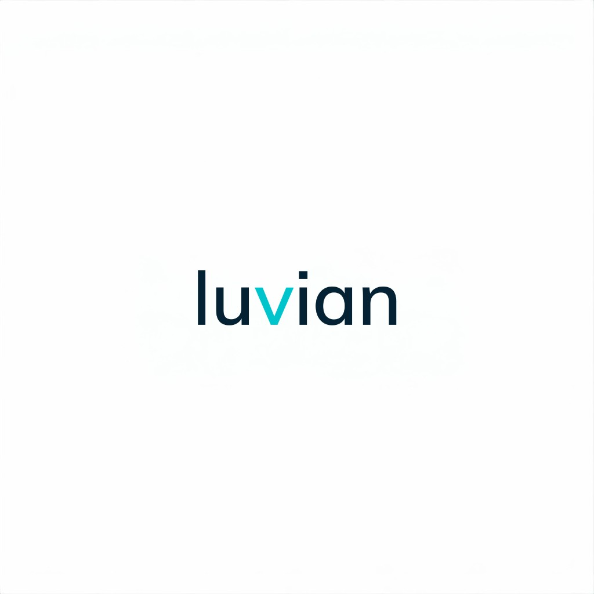

Company Strategy
Building Durable
Competitive Advantage
The 7 Powers Framework Applied to the Engineering Intelligence Layer
Internal Strategy
Confidential
May 2026

Company Strategy
The 7 Powers Framework Applied to the Engineering Intelligence Layer
Strategic Thesis
Luvian wins by building the semantic engineering graph for autonomous and safety-critical systems: a typed, queryable, auditable context layer where every engineering decision and its consequences live — the substrate enterprise AI needs to be trustworthy, and the layer no competitor covers at full depth.
The graph accumulates organizational intelligence that makes AI better with every interaction, creates switching costs that deepen with every trace link, and produces the compliance evidence that regulated buyers cannot do without.
4
Domains in one graph
Architecture + Requirements + Safety + V&V
0
Competitors cover all four
Structural differentiation
7
Powers to build
Helmer's framework for durable advantage
Hamilton Helmer's Framework
If an initiative strengthens none of these, it's a feature, not a strategy.
Superior model incumbents can't copy
Primary
Cost of leaving deepens with use
Primary
Hard-to-replicate processes
Secondary
Exclusive access to assets
Secondary
Unit cost declines at volume
Designing
Value grows with users
Designing
Category ownership = trust
Planting
Power #1: Counter-Positioning
A single counter-position can be overcome. Four simultaneous ones require the incumbent to execute four architectural rewrites while maintaining their existing product. That is structurally infeasible.
$100–$450/mo vs. $5K–$15K/yr desktop licenses
Cameo/DOORS would cannibalize their entire revenue base
Local-first ML pipeline with semantic context contract
Requires rebuilding from the data model up, not a plugin
First-class parser, importer, and diagramizer
Would strand their SysML v1 installed base of 20+ years
Yjs/CRDT multiplayer with command→patch pipeline
Would require rewriting their single-user file-locking model
Power #2: Switching Costs
Every trace link, safety goal, coverage metric, and verification evidence accumulates in Luvian's graph. Recreating this in another tool is months of manual work.
Deep by month 6 of usage
The ML pipeline learns team-specific patterns: modeling style, requirement phrasing, and common failure modes. This intelligence is lost on switching.
Medium by month 12 of usage
Professional services ($10–$50K per engagement) physically move customer data into Luvian. Custom integrations and training are non-transferable.
Immediate at onboarding
Powers #3 & #4: Process Power + Cornered Resource
Candidate generation → feature extraction → ranking → policy → response shaping → feedback. Domain-tuned, not a GPT wrapper.
Semantic → Presentation → React Flow. Enables one-element-many-diagrams. Full rewrite needed to retrofit.
Dispatch pipeline with forward + inverse patches flowing into Y.Doc. Systems-level integration, not a feature.
All AI consumers share a single versioned context. Prevents the fragmentation that kills AI features in other products.
5 innovations identified. Must file provisionals before any public demo.
As customers model in Luvian, we accumulate real-world engineering decision graphs, the rarest dataset in MBSE.
OMG SysML v2 working group + INCOSE Fellow on advisory board. Influence takes years to build.
Defense procurement, enterprise SaaS, systems engineering. Finite pool, and the first mover gets them.
AI Moat
Inherited Story
"Ambient ML suggests improvements while you edit"
Competes with GPT wrappers on suggestion quality
First-Principles Story
"Luvian answers: what's missing, what changed, and what's at risk"
Requires the decision graph. Structurally non-replicable by prompt-based competitors
Gap Detection
"3 requirements have no verification plan"
Impact Analysis
"Changing this interface affects 12 test cases"
Consistency Checking
"These 2 requirements may conflict"
Quality Scoring
INCOSE A–F grading at authoring time
Scaffold Generation
Starter templates from domain knowledge
Invest proportionally to defensibility. Gap detection > suggestions
Strategic Positioning
| Buyer Archetype | Optimizes For | Best Fit | Luvian's Play |
|---|---|---|---|
| Move-fast hardware | Iteration speed | Flow | Don't compete directly |
| Requirements-heavy | Traceability, audit | Trace.Space | Compete on scope |
| Standards-governed | ASIL, INCOSE, certification | LUVIAN | Natural home. Invest here |
| Defense acquisition | Git-native, MOSA | SysGit | Compete on UX + AI |
| Early-stage learners | Free, simple | Dalus | Free tier required |
| Ansys ecosystem | Simulation bundling | Ansys SAM | Target non-Ansys shops |
Our segment: Teams building safety-critical systems in regulated industries (automotive OEM, avionics tier 1, defense programs, nuclear/energy) who need integrated architecture + requirements + safety + V&V in one auditable graph.
vs. Startup Cohort
| Capability | Luvian | Flow $36M |
Trace $11.5M |
Dalus YC |
SysGit $6.3M |
|---|---|---|---|---|---|
| Architecture modeling (SysML v2) | ✓ | ✗ | ✗ | ~ | ✓ |
| Requirements management | ✓ | ✓ | ✓ | ~ | ✗ |
| Safety analysis (HARA/FMEA/STPA) | ✓ | ✗ | ✗ | ✗ | ✗ |
| V&V / verification evidence | ✓ | ✗ | ~ | ✗ | ✗ |
| INCOSE quality engine | ✓ | ✗ | ✗ | ✗ | ✗ |
| Local-first AI (air-gap) | ✓ | ✗ | ✗ | ✗ | ✓ |
| SOC 2 certification | Not yet | ITAR | SOC2+ISO | Type 2 | No |
Safety analysis + V&V rows: Luvian is the only startup with coverage. This is the structural moat against the funded cohort.
Go-to-Market Strategy
Each phase delivers standalone value. Each phase deepens switching costs. No big-bang replacement required.
Connect existing tools. See what's missing. Produce compliance evidence automatically.
✓ Import from Cameo, DOORS
✓ Traceability graph
✓ Gap analysis reports
Author requirements directly with INCOSE quality checking at the point of authoring.
✓ INCOSE A–F grading
✓ Replaces DOORS
✓ Quality engine wedge
SysML v2 visual modeling with collaboration and AI assistance.
✓ Replaces Cameo
✓ Real-time collab
✓ Ambient ML context
Full decision graph with safety analysis and verification evidence.
✓ Replaces spreadsheets
✓ Evidence automation
✓ Complete graph
Switching cost depth: Phase 1: Low → Phase 2: Medium → Phase 3: High → Phase 4: Very High
Activation Timeline
Decision Framework
If not, it's a feature, not a strategy. Features can wait. Powers cannot.
Standards-governed teams building safety-critical systems. If it primarily serves Flow's or Dalus's segment, it's a distraction.
The decision graph is the strategic asset. Every feature should make the graph deeper, richer, or more connected.
Active now (Counter-Positioning, Switching Costs) = maximum investment. Designing (Scale, Network) = architectural investment only.
Return to the seven axioms: decisions compound, evidence not process, graph answers questions, mutations must be reversible.
The Compounding Loop
Decisions accumulate in the graph
ML pipeline gets smarter with feedback
Missing traces, conflicts, risks surfaced
Switching costs compound every cycle
This loop only works with the decision graph.
GPT-wrapper competitors can't build it. They don't have the graph.
Summary
The context layer for engineering intelligence — a semantic engineering graph for autonomous and safety-critical systems.
Teams building robotics, mechatronics, and safety-critical systems: automotive, avionics, defense, energy.
4-layer counter-positioning vs. incumbents. Switching costs that deepen with every trace link. Process power in ML and architecture.
Evidence layer first → requirements → modeling → safety + V&V. Each step delivers value and deepens lock-in.
Not suggestions (anyone wraps GPT). Gap detection: what's missing, what changed, what's at risk. Requires the graph.
Only product covering all four domains (architecture + requirements + safety + V&V) with local-first AI and air-gap deployment.
$7–10M seed → 5 design partners → SOC 2 → patents filed → category defined
18 months to prove the graph deepens switching costs as predicted.
The context layer for engineering intelligence.
Built for an autonomous future.
Luvian Confidential. Internal Strategy